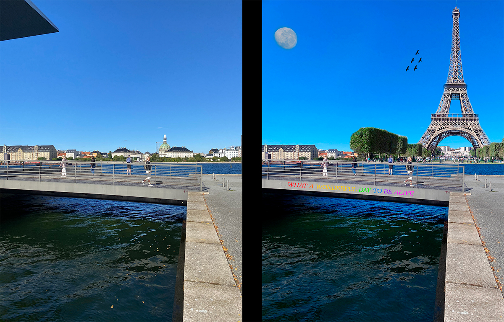
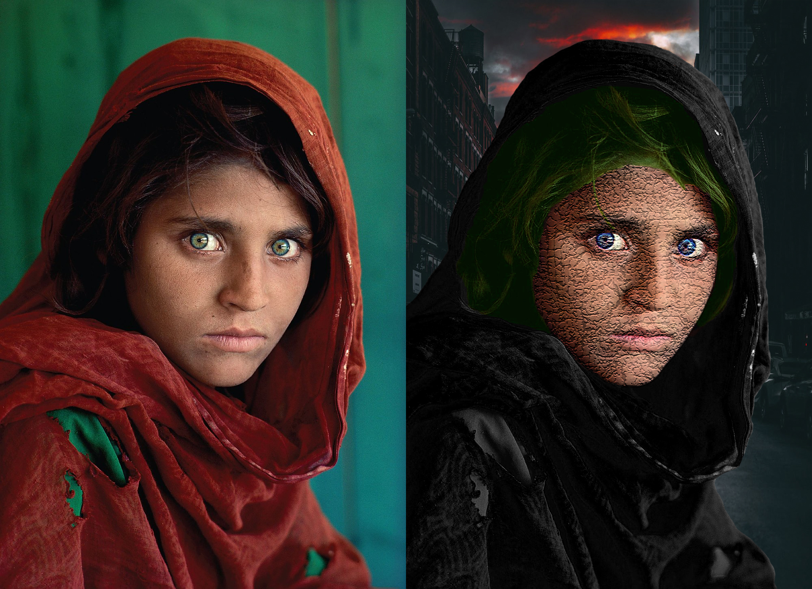
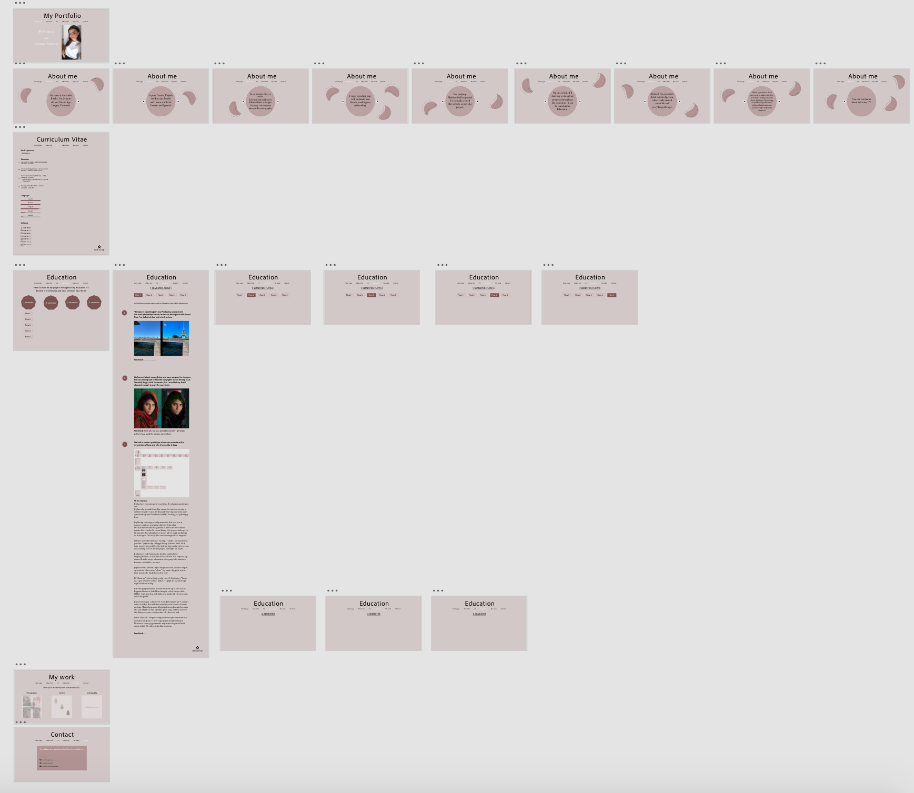

In this flow we were introduced to Adobe Xd and Adobe Photoshop.
“Bridges in Copenhagen” aka Photoshop assignment.
I’ve used photoshop before, but never been good with layers. Now I’ve definitely learned a trick or two.

Feedback:
...
We learned about copyrighting and were assigned to change a famous photograph so that the copyrights would belong to us.
I’m really happy with the results, but I wouldn’t say that I changed enough to own the copyrights.

Feedback:
Flot arbejde, men du ville ikke komme langt med det billede, hvis du brugte det nogen steder - det ligner alt for meget det originale.
We had to make a prototype of our own website with a description of how and why it looks like it does.

My description:
Jeg har lavet en prototype til et portfolio, der afspejler min kreative side.
Jeg har valgt at samle forskellige emner, der interesserer mig, så det hele er samlet ét sted. På den måde bliver hjemmesiden mere spændende og man får et bedre indblik i, hvem jeg er, og hvad jeg laver.
Jeg har lagt stort vægt på, at hjemmesiden skal være nem at navigere rundt på, og at alting skal være letlæseligt.
Det skal ikke se rodet ud, og derfor er diverse tekster fordelt i mindre dele - i stedet for en stor klump. Hvis jeg selv støder på en hjemmeside, hvor alting bare er skrevet ud i ét, så går jeg hurtigt ud af den igen. Det skal jo ikke være anstrengende for brugeren.
Siden er overordnet delt op i “om mig,” “studie” og “mit arbejde/portfolie.” Jeg har valgt, at bygge den op på denne måde, fordi dette netop er mit portfolio, der skal vise mig som (kreativ) person, men samtidig være en del af et projekt, der følger mit studie.
Jeg har lavet en del undersider, da dette skal forbedre brugeroplevelsen, så man ikke skal scrolle ned af en lang side, og dermed få alt for meget information på en gang. Informationen kommer i små bidder - sorteret.
Jeg har bevidst primært valgt at bruge sans serif, da det er simpelt og moderne - det er mere “clean.” Jeg kunne dog godt, senere, finde på at ændre brødteksten til en serif.
På “about me”-siderne har jeg valgt en serif, fordi det ser “finere ud,” og er nemmere at læse, hvilket er vigtigt der, da teksten på nogle af siderne er lang.
Farverne på hjemmesiden matcher hinanden og er rare at se på. Baggrundsfarven er forholdsvis dæmpet, så den forstyrer ikke blikket. Jeg kunne dog godt finde på at ændre lidt i farverne på et senere tidspunkt.
Jeg overvejer også, at få lavet en “kontakt-formular” på “Contact”-siden, da folk på den måde har nemmere ved at komme i kontakt med mig. Man er langt mere tilbøjelig til at tage kontakt, hvis man blot skal udfylde sin mail og trykke på en knap, end hvis man selv skal finde personens sociale medier eller skrive en mail.
Siden “My work” mangler stadig at få lavet nogle undersider bl.a. med mine fotografier. Det er noget jeg vil arbejde videre på. Derudover kunne jeg godt tænke mig at sætte noget self-made design ind på CV-siden, så den ikke er så tom.
Feedback:
Meget fin prototype. Godt, der er lidt variation på "about me" siderne med de små figurer.
Rigtig godt at du har inddelt det i semestre og flows, da siden skal bruges igennem hele jeres uddannelse og løbende skal opdateres.
På den første side, kan man komme til at læse "welcome to my creative universe" som forskellige links - sæt hellere ordene ved siden af hinanden to og to.